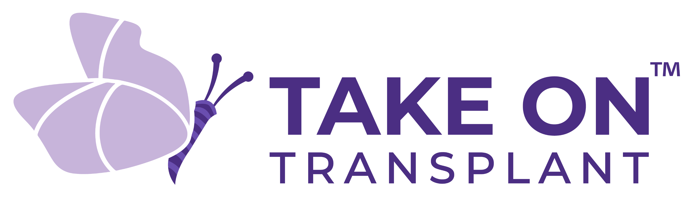
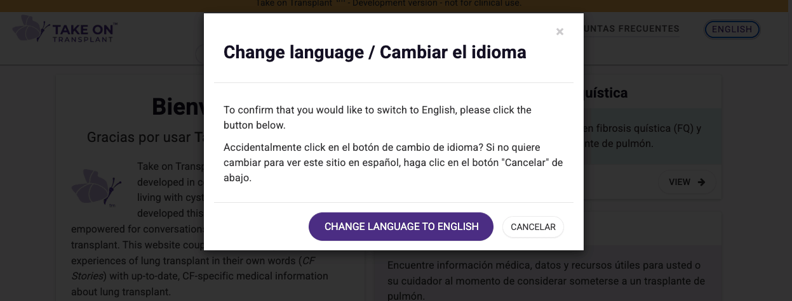
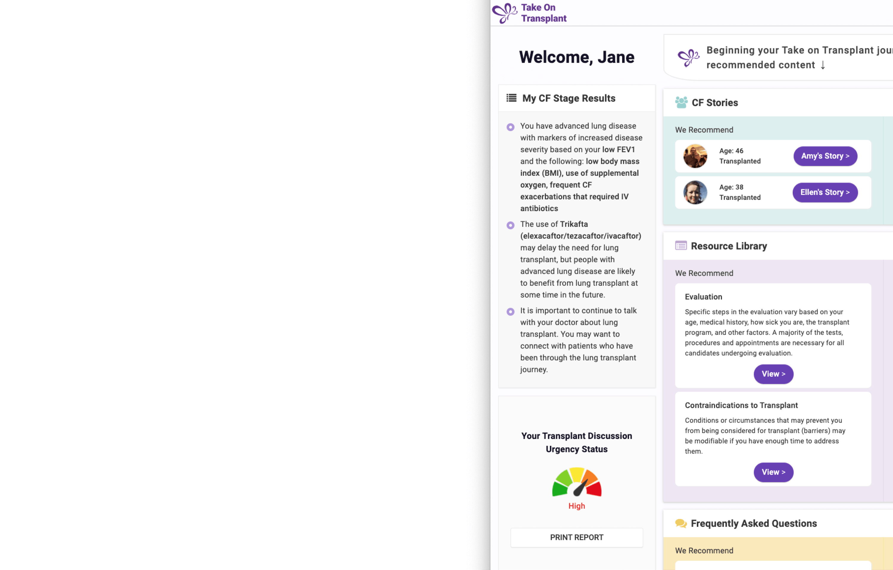
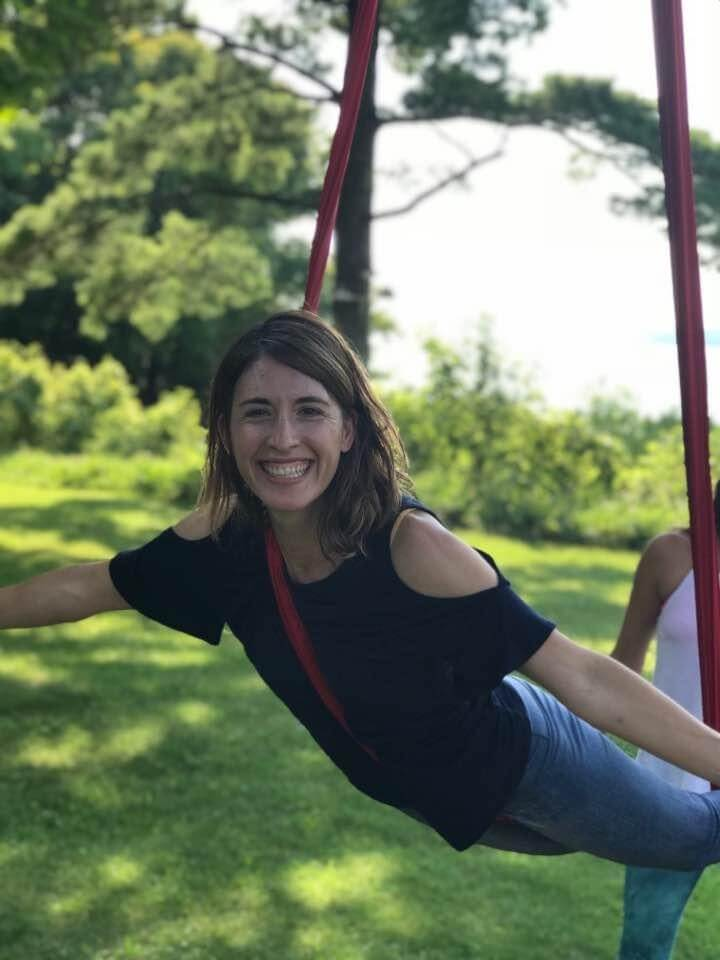

Explore Our Demo
View a short video demonstration of the Take on Transplant™ website. Learn how to take the initial My CF Stage Survey and explore personalized educational content and resources.
See the Demo Video
A resource for people living with cystic fibrosis (CF), their families, and caregivers to learn about lung transplant through educational resources, shared experiences, and up-to-date medical information.
Take on Transplant™ was created to help people with CF feel more informed and prepared as they consider lung transplant and discuss treatment options with their care teams.

Learn from people living with CF as they share personal experiences about considering, preparing for, and living after lung transplant.
Explore educational resources about transplant referral, evaluation, surgery, recovery, caregiving, mental health, quality of life, and life after transplant.
Read answers to common questions about lung transplant provided by people with CF who have undergone transplant.

Take on Transplant™ is available in both English and Spanish to improve access to transplant education for people with CF and their loved ones.
View a short video demonstration of the Take on Transplant™ website. Learn how to take the initial My CF Stage Survey and explore personalized educational content and resources.
See the Demo Video
Lung transplant is an important treatment option for some people with advanced CF lung disease and may improve quality of life and extend survival. However, transplant is also a major medical decision that can feel overwhelming for patients and families.
Research studies have shown that many people with CF want more information and feel underprepared for conversations and decisions related to lung transplant. People living with CF may have questions about survival, quality of life, recovery, caregiving needs, eligibility, timing of referral, and life after transplant.
Take on Transplant™ was developed to help address these gaps by providing accessible, evidence-based educational resources alongside real-world experiences shared by people with CF and caregivers.
The website encourages early education and open communication between people with CF, their loved ones, CF care teams, and lung transplant programs. While lung transplant is not the right choice for everyone, understanding transplant as a treatment option can help people make informed decisions that align with their goals and values.

Take on Transplant™ was developed in partnership with people living with CF, caregivers, transplant recipients, and clinicians.
Our research team interviewed more than 50 people with CF, including individuals who underwent lung transplant and people who decided not to pursue transplant. We also interviewed caregivers and family members to better understand their experiences, concerns, and support needs during the transplant journey.
The stories, educational materials, and website features were shaped by the insights and recommendations shared during these interviews.
Medical content throughout the website has been reviewed by CF and lung transplant physicians and incorporates recommendations supported by Cystic Fibrosis Foundation guidelines and current transplant care practices.
Take on Transplant™ was developed with research funding from the National Institutes of Health (NIH) and the Cystic Fibrosis Foundation.
Please note: Vertex Pharmaceuticals (the makers of “Trikafta” and other CFTR modulators) did not provide funding for the creation of Take on Transplant™ and did not participate in the development of this website.
The Take on Transplant™ research team is based at the University of Washington in Seattle, WA and includes CF and lung transplant physicians, researchers with experience in CF and lung transplantation, qualitative researchers, and clinical informatics specialists.
Drs. Kathleen Ramos and Siddhartha Kapnadak wrote and reviewed the medical content included throughout the website and ensured medical accuracy across patient and caregiver stories.
Dr. Mara Hobler, a qualitative researcher, conducted interviews with patients and caregivers and worked closely with participants to develop the CF Stories featured on the website.
Our team has authored multiple scientific publications focused on advanced CF lung disease, lung transplantation, communication, and patient-centered outcomes.
Dr. Ramos is an adult pulmonologist working in the University of Washington (UW) Adult Cystic Fibrosis Center and the UW Lung Transplant Program. She cares for people with CF and individuals living with lung transplant. She also holds a Master’s degree in epidemiology from the UW School of Public Health. Her research focuses on advanced CF lung disease and lung transplantation, with an emphasis on clinical outcomes and improving access to transplant for people at high risk of dying from CF lung disease. She served as co-chair of the Cystic Fibrosis Foundation lung transplant referral guidelines committee and was the lead author of the resulting guidelines document. She also co-chaired the committee that revised the International Society of Heart and Lung Transplantation consensus recommendations for the selection of lung transplant candidates.
Dr. Kapnadak is an adult pulmonologist (lung doctor) in the University of Washington (UW) Adult Cystic Fibrosis Center and the UW Lung Transplant Program. His clinical work focuses on caring for people with advanced lung disease, individuals undergoing lung transplant, and people living with CF. His research and clinical interests include improving outcomes in advanced CF lung disease, lung transplant candidacy, and care before and after transplant. He was lead author of the 2020 Cystic Fibrosis Foundation consensus guidelines for advanced CF lung disease, and has served in various roles within the International Society for Heart and Lung Transplantation and the American College of Chest Physicians.

Dr. Mara Hobler (died August 2021) was an exceptional researcher, colleague, and friend who contributed profoundly to the development of Take on Transplant™.
She conducted interviews with people living with CF and their loved ones about deeply personal and emotional experiences related to advanced lung disease and lung transplant. Mara’s empathy, compassion, and skill as a qualitative researcher helped participants feel comfortable sharing difficult experiences and perspectives that shaped this project.
Her work contributed meaningfully to improving communication and understanding around lung transplant for people living with CF.
We dedicate Take on Transplant™ to her memory and honor the lasting impact she made on the CF research community.
